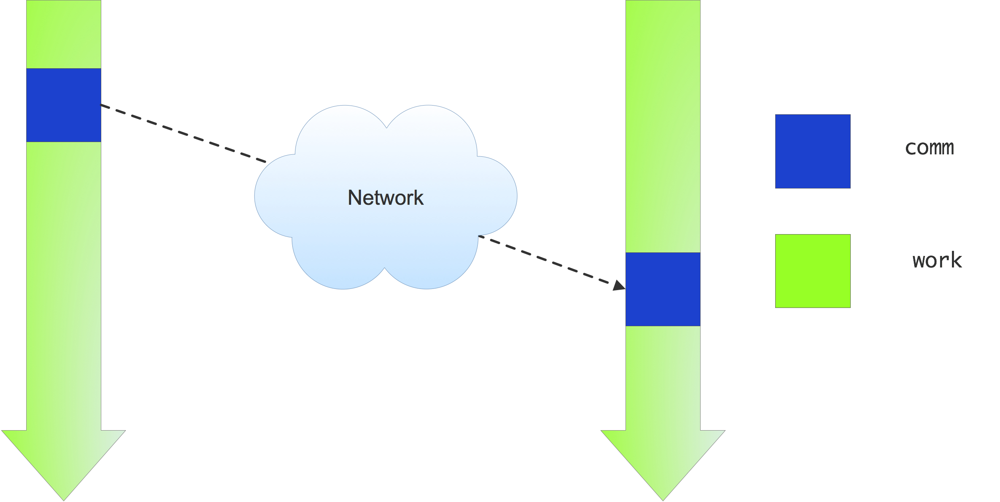
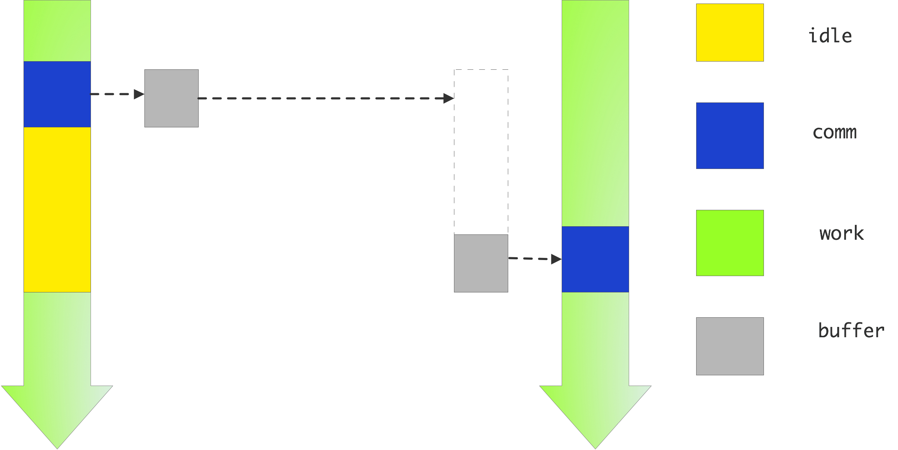

crumb trail: > mpi-ptp > Blocking point-to-point operations
Suppose you have an array of numbers $x_i\colon i=0,\ldots,N$ and you want to compute \[ y_i=(x_{i-1}+x_i+x_{i+1})/3\colon i=1,\ldots,N-1. \] As before (see figure~ 2.6 ), we give each processor a subset of the~$x_i$s and $y_i$s. Let's define $i_p$ as the first index of~$y$ that is computed by processor~$p$. (What is the last index computed by processor~$p$? How many indices are computed on that processor?)
We often talk about the owner computes model of parallel computing: each processor `owns' certain data items, and it computes their value.
FIGURE 4.1: Three point averaging in parallel
Now let's investigate how processor $p$ goes about computing $y_i$ for the $i$-values it owns. Let's assume that process $p$ also stores the values $x_i$ for these same indices. Now, for many values $i$ it can evalute the computation \[ y_{i} = (x_{i-1}+x_{i}+x_{i+1})/3 \] locally (figure 4.1 ).
However, there is a problem with computing $y$ in the first index $i_p$ on processor $p$: \[ y_{i_p} = (x_{i_p-1}+x_{i_p}+x_{i_p+1})/3 \] The point to the left, $x_{i_p-1}$, is not stored on process $p$ (it is stored on $p-1$), so it is not immediately available for use by process $p$.
FIGURE 4.2: Three point averaging in parallel, case of edge points
(figure 4.2 ). There is a similar story with the last index that $p$ tries to compute: that involves a value that is only present on $p+1$.
You see that there is a need for processor-to-processor, or technically point-to-point , information exchange. MPI realizes this through matched send and receive calls:
We will now discuss the send and receive routines in detail.
crumb trail: > mpi-ptp > Blocking point-to-point operations > Example: ping-pong
A simple scenario for information exchange between just two processes is the ping-pong : process A sends data to process B, which sends data back to A. This means that process A executes the code
MPI_Send( /* to: */ B ..... ); MPI_Recv( /* from: */ B ... );
while process B executes
MPI_Recv( /* from: */ A ... ); MPI_Send( /* to: */ A ..... );
Since we are programming in SPMD mode, this means our program looks like:
if ( /* I am process A */ ) {
MPI_Send( /* to: */ B ..... );
MPI_Recv( /* from: */ B ... );
} else if ( /* I am process B */ ) {
MPI_Recv( /* from: */ A ... );
MPI_Send( /* to: */ A ..... );
}
The structure of the send and receive calls shows the symmetric nature of MPI: every target process is reached with the same send call, no matter whether it's running on the same multicore chip as the sender, or on a computational node halfway across the machine room, taking several network hops to reach. Of course, any self-respecting MPI implementation optimizes for the case where sender and receiver have access to the same shared memory. This means that a send/recv pair is realized as a copy operation from the sender buffer to the receiver buffer, rather than a network transfer.
crumb trail: > mpi-ptp > Blocking point-to-point operations > Send call
The blocking send command is
C: int MPI_Send( const void* buf, int count, MPI_Datatype datatype, int dest, int tag, MPI_Comm comm) Semantics: IN buf: initial address of send buffer (choice) IN count: number of elements in send buffer (non-negative integer) IN datatype: datatype of each send buffer element (handle) IN dest: rank of destination (integer) IN tag: message tag (integer) IN comm: communicator (handle) Fortran: MPI_Send(buf, count, datatype, dest, tag, comm, ierror) TYPE(*), DIMENSION(..), INTENT(IN) :: buf INTEGER, INTENT(IN) :: count, dest, tag TYPE(MPI_Datatype), INTENT(IN) :: datatype TYPE(MPI_Comm), INTENT(IN) :: comm INTEGER, OPTIONAL, INTENT(OUT) :: ierror Python: MPI.Comm.send(self, obj, int dest, int tag=0) Python numpy: MPI.Comm.Send(self, buf, int dest, int tag=0) MPL: templatevoid mpl::communicator::send ( const T scalar&,int dest,tag = tag(0) ) const T : scalar type ( const T *buffer,const layout< T > &,int dest,tag = tag(0) ) const ( iterT begin,iterT end,int dest,tag = tag(0) ) const begin : begin iterator end : end iterator
// sendandrecv.c
double send_data = 1.;
MPI_Send
( /* send buffer/count/type: */ &send_data,1,MPI_DOUBLE,
/* to: */ receiver, /* tag: */ 0,
/* communicator: */ comm);
The send call has the following elements.
Buffer
The
send buffer
is described by a trio of buffer/count/datatype.
See section
3.2.4
for discussion.
Target
The
explicit process rank to send to. This rank is a number from zero up
to the result of
MPI_Comm_size
.
It is allowed for a process to send to itself, but
this may lead to a runtime
deadlock
;
see section
4.1.4
for discussion.
Tag
Next, a message can have a
tag
.
Many applications have each sender send only one message at a time
to a given receiver.
For the case where there are
multiple simultaneous messages between the same sender / receiver pair,
the tag can be used to disambiguate between
the messages.
Often, a tag value of zero is safe to use. Indeed, OO interfaces to MPI typically have the tag as an optional parameter with value zero. If you do use tag values, you can use the key MPI_TAG_UB to query what the maximum value is that can be used; see section 15.1.2 .
Communicator
Finally, in common with the vast majority of MPI calls,
there is a communicator argument that provides a context for the send transaction.
uses a default value for the tag, and it can deduce the type of the buffer. Sending a scalar becomes:
// sendscalar.cxx
if (comm_world.rank()==0) {
double pi=3.14;
comm_world.send(pi, 1); // send to rank 1
cout << "sent: " << pi << '\n';
} else if (comm_world.rank()==1) {
double pi=0;
comm_world.recv(pi, 0); // receive from rank 0
cout << "got : " << pi << '\n';
}
can send static array s without further layout specification:
// sendarray.cxx double v[2][2][2]; comm_world.send(v, 1); // send to rank 1 comm_world.recv(v, 0); // receive from rank 0
Sending vectors uses a general mechanism:
// sendbuffer.cxx std::vector<double> v(8); mpl::contiguous_layout<double> v_layout(v.size()); comm_world.send(v.data(), v_layout, 1); // send to rank 1 comm_world.recv(v.data(), v_layout, 0); // receive from rank 0
It is possible to to send containers by iterators
// sendrange.cxx vector<double> v(15); comm_world.send(v.begin(), v.end(), 1); // send to rank 1 comm_world.recv(v.begin(), v.end(), 0); // receive from rank 0
Noncontiguous iteratable objects can be send with a iterator_layout
std::list<int> v(20, 0); mpl::iterator_layout<int> l(v.begin(), v.end()); comm_world.recv(&(*v.begin()), l, 0);
crumb trail: > mpi-ptp > Blocking point-to-point operations > Receive call
The basic blocking receive command is
C:
int MPI_Recv(
void* buf, int count, MPI_Datatype datatype,
int source, int tag, MPI_Comm comm, MPI_Status *status)
Semantics:
OUT buf: initial address of receive buffer (choice)
IN count: number of elements in receive buffer (non-negative integer)
IN datatype: datatype of each receive buffer element (handle)
IN source: rank of source or MPI_ANY_SOURCE (integer)
IN tag: message tag or MPI_ANY_TAG (integer)
IN comm: communicator (handle)
OUT status: status object (Status)
Fortran:
MPI_Recv(buf, count, datatype, source, tag, comm, status, ierror)
TYPE(*), DIMENSION(..) :: buf
INTEGER, INTENT(IN) :: count, source, tag
TYPE(MPI_Datatype), INTENT(IN) :: datatype
TYPE(MPI_Comm), INTENT(IN) :: comm
TYPE(MPI_Status) :: status
INTEGER, OPTIONAL, INTENT(OUT) :: ierror
Python native:
recvbuf = Comm.recv(self, buf=None, int source=ANY_SOURCE, int tag=ANY_TAG,
Status status=None)
Python numpy:
Comm.Recv(self, buf, int source=ANY_SOURCE, int tag=ANY_TAG,
Status status=None)
MPL:
template
status mpl::communicator::recv
( T &,int,tag = tag(0) ) const inline
( T *,const layout< T > &,int,tag = tag(0) ) const
( iterT begin,iterT end,int source, tag t = tag(0) ) const
An example:
double recv_data;
MPI_Recv
( /* recv buffer/count/type: */ &recv_data,1,MPI_DOUBLE,
/* from: */ sender, /* tag: */ 0,
/* communicator: */ comm,
/* recv status: */ MPI_STATUS_IGNORE);
This is similar in structure to the send call, with some exceptions.
Buffer
The
receive buffer
has the same buffer/count/data parameters as the send
call.
However,
the
count
argument here indicates the size of the buffer,
rather than the actual length of a message.
This sets an upper bound on the length of the incoming message.
The length of the received message can be determined from the status object; see section 4.3.2 for more detail.
Source
Mirroring the target argument of the
MPI_Send
call,
MPI_Recv
has a
argument.
This can be either a specific rank, or it can be the
MPI_ANY_SOURCE
wildcard. In the latter case, the actual
source can be determined after the message has been received;
see section
4.3.2
.
A source value of
MPI_PROC_NULL
is also allowed,
which makes the receive succeed immediately with no data received.
equals MPI_ANY_SOURCE (by constexpr ). End of MPL note
Tag
Similar to the messsage source, the message tag of a receive call can
be a specific value or a wildcard, in this case
MPI_ANY_TAG
.
Again, see below.
Communicator
The communicator argument almost goes without remarking.
Status
The
MPI_Recv
command has one parameter that
the send call lacks: the
MPI_Status
object,
describing the
message status
.
This gives information about the message received,
for instance if you used wildcards for source or tag.
See section
4.3.2
for more about the status object.
If you're not interested in the status, as is the case in many examples in this book, specify the constant MPI_STATUS_IGNORE . Note that the signature of MPI_Recv lists the status parameter as `output'; this `direction' of the parameter of course only applies if you do not specify this constant. (See also section 15.10.1 .)
Implement the ping-pong program. Add a timer using MPI_Wtime . For the status argument of the receive call, use MPI_STATUS_IGNORE .
For bonus points, can you do a regression to determine $\alpha,\beta$?
Take your pingpong program and modify it to let half the processors be source and the other half the targets. Does the pingpong time increase?
crumb trail: > mpi-ptp > Blocking point-to-point operations > Problems with blocking communication
You may be tempted to think that the send call puts the data somewhere in the network, and the sending code can progress, as in figure 4.3 , left.
\leavevmode  
FIGURE 4.3: Illustration of an ideal (left) and actual (right) send-receive interaction
But this ideal scenario is not realistic: it assumes that somewhere in the network there is buffer capacity for all messages that are in transit. This is not the case: data resides on the sender, and the sending call blocks, until the receiver has received all of it. (There is a exception for small messages, as explained in the next section.)
The use of MPI_Send and MPI_Recv is known as blocking communication : when your code reaches a send or receive call, it blocks until the call is succesfully completed.
Technically, blocking operations are called non-local since their execution depends on factors that are not local to the process. See section 5.4 .
For a receive call it is clear that the receiving code will wait until the data has actually come in, but for a send call this is more subtle.
crumb trail: > mpi-ptp > Blocking point-to-point operations > Problems with blocking communication > Deadlock
Suppose two process need to exchange data, and consider the following pseudo-code, which purports to exchange data between processes 0 and 1:
other = 1-mytid; /* if I am 0, other is 1; and vice versa */ receive(source=other); send(target=other);
Imagine that the two processes execute this code. They both issue the send call…\ and then can't go on, because they are both waiting for the other to issue the send call corresponding to their receive call. This is known as deadlock .
crumb trail: > mpi-ptp > Blocking point-to-point operations > Problems with blocking communication > Eager vs rendezvous protocol
Messages can be sent using (at least) two different protocol s:
The rendezvous protocol is the most general. Sending a message takes several steps:
The purpose of this is to to prepare the receiver buffer space for large messages. However, it implies that the sender has to wait for some return message from the receiver, making the behavior a synchronous message .
For the eager protocol, consider the example:
other = 1-mytid; /* if I am 0, other is 1; and vice versa */ send(target=other); receive(source=other);
With a synchronous protocol you should get deadlock, since the send calls will be waiting for the receive operation to be posted.
In practice, however, this code will often work. The reason is that MPI implementations sometimes send small messages regardless of whether the receive has been posted. This relies on the availability of some amount of available buffer space. The size under which this behavior is used is sometimes referred to as the eager limit .
To illustrate eager and blocking behavior in MPI_Send , consider an example where we send gradually larger messages. From the screen output you can see what the largest message was that fell under the eager limit; after that the code hangs because of a deadlock.
// sendblock.c
other = 1-procno;
/* loop over increasingly large messages */
for (int size=1; size<2000000000; size*=10) {
sendbuf = (int*) malloc(size*sizeof(int));
recvbuf = (int*) malloc(size*sizeof(int));
if (!sendbuf || !recvbuf) {
printf("Out of memory\n"); MPI_Abort(comm,1);
}
MPI_Send(sendbuf,size,MPI_INT,other,0,comm);
MPI_Recv(recvbuf,size,MPI_INT,other,0,comm,&status);
/* If control reaches this point, the send call
did not block. If the send call blocks,
we do not reach this point, and the program will hang.
*/
if (procno==0)
printf("Send did not block for size %d\n",size);
free(sendbuf); free(recvbuf);
}
!! sendblock.F90
other = 1-mytid
size = 1
do
allocate(sendbuf(size)); allocate(recvbuf(size))
print *,size
call MPI_Send(sendbuf,size,MPI_INTEGER,other,0,comm,err)
call MPI_Recv(recvbuf,size,MPI_INTEGER,other,0,comm,status,err)
if (mytid==0) then
print *,"MPI_Send did not block for size",size
end if
deallocate(sendbuf); deallocate(recvbuf)
size = size*10
if (size>2000000000) goto 20
end do
20 continue
## sendblock.py
size = 1
while size<2000000000:
sendbuf = np.empty(size, dtype=np.int)
recvbuf = np.empty(size, dtype=np.int)
comm.Send(sendbuf,dest=other)
comm.Recv(sendbuf,source=other)
if procid<other:
print("Send did not block for",size)
size *= 10
If you want a code to exhibit the same blocking behavior for all message sizes, you force the send call to be blocking by using MPI_Ssend , which has the same calling sequence as MPI_Send , but which does not allow eager sends.
// ssendblock.c
other = 1-procno;
sendbuf = (int*) malloc(sizeof(int));
recvbuf = (int*) malloc(sizeof(int));
size = 1;
MPI_Ssend(sendbuf,size,MPI_INT,other,0,comm);
MPI_Recv(recvbuf,size,MPI_INT,other,0,comm,&status);
printf("This statement is not reached\n");
The solution to the deadlock in the above example is to first do the send from 0 to 1, and then from 1 to 0 (or the other way around). So the code would look like:
if ( /* I am processor 0 */ ) {
send(target=other);
receive(source=other);
} else {
receive(source=other);
send(target=other);
}
The eager limit is implementation-specific. For instance, for Intel MPI there is a variable I_MPI_EAGER_THRESHOLD , for mvapich2 it is MV2_IBA_EAGER_THRESHOLD , and for OpenMPI the --mca options btl_openib_eager_limit and btl_openib_rndv_eager_limit .
crumb trail: > mpi-ptp > Blocking point-to-point operations > Problems with blocking communication > Serialization
There is a second, even more subtle problem with blocking communication. Consider the scenario where every processor needs to pass data to its successor, that is, the processor with the next higher rank. The basic idea would be to first send to your successor, then receive from your predecessor. Since the last processor does not have a successor it skips the send, and likewise the first processor skips the receive. The pseudo-code looks like:
successor = mytid+1; predecessor = mytid-1; if ( /* I am not the last processor */ ) send(target=successor); if ( /* I am not the first processor */ ) receive(source=predecessor)
(Classroom exercise) Each student holds a piece of paper in the right hand -- keep your left hand behind your back -- and we want to execute:
Including boundary conditions for first and last process, that becomes the following program:
This code does not deadlock. All processors but the last one block on the send call, but the last processor executes the receive call. Thus, the processor before the last one can do its send, and subsequently continue to its receive, which enables another send, et cetera.
In one way this code does what you intended to do: it will terminate (instead of hanging forever on a deadlock) and exchange data the right way. However, the execution now suffers from unexpected serialization : only one processor is active at any time, so what should have been a
FIGURE 4.4: Trace of a simple send-recv code
parallel operation becomes a sequential one. This is illustrated in figure 4.4 .
Implement the above algorithm using MPI_Send and MPI_Recv calls. Run the code, and use TAU to reproduce the trace output of figure 4.4 . If you don't have TAU, can you show this serialization behavior using timings, for instance running it on an increasing number of processes?
It is possible to orchestrate your processes to get an efficient and deadlock-free execution, but doing so is a bit cumbersome.
The above solution treated every processor equally. Can you come up with a solution that uses blocking sends and receives, but does not suffer from the serialization behavior?
There are better solutions which we will explore in the next section.
crumb trail: > mpi-ptp > Blocking point-to-point operations > Bucket brigade
The problem with the previous exercise was that an operation that was conceptually parallel, became serial in execution. On the other hand, sometimes the operation is actually serial in nature. One example is the bucket brigade operation, where a piece of data is successively passed down a sequence of processors.
Take the code of exercise 4.4 and modify it so that the data from process zero gets propagated to every process. Specifically, compute all partial sums $\sum_{i=0}^pi^2$: \[ \begin{cases} x_0 = 1&\hbox{on process zero}\\ x_p = x_{p-1}+(p+1)^2 & \hbox{on process $p$}\\ \end{cases} \] Use MPI_Send and MPI_Recv ; make sure to get the order right.
Food for thought: all quantities involved here are integers. Is it a good idea to use the integer datatype here?
Question: could you have done this with a collective call?
There is an MPI_Scan routine (section 3.4 ) that performs the same computation, but computationally more efficiently. Thus, this exercise only serves to illustrate the principle.
crumb trail: > mpi-ptp > Blocking point-to-point operations > Pairwise exchange
Above you saw that with blocking sends the precise ordering of the send and receive calls is crucial. Use the wrong ordering and you get either deadlock, or something that is not efficient at all in parallel. MPI has a way out of this problem that is sufficient for many purposes: the combined send/recv call
Semantics:
MPI_SENDRECV(
sendbuf, sendcount, sendtype, dest, sendtag,
recvbuf, recvcount, recvtype, source, recvtag,
comm, status)
IN sendbuf: initial address of send buffer (choice)
IN sendcount: number of elements in send buffer (non-negative integer)
IN sendtype: type of elements in send buffer (handle)
IN dest: rank of destination (integer)
IN sendtag: send tag (integer)
OUT recvbuf: initial address of receive buffer (choice)
IN recvcount: number of elements in receive buffer (non-negative integer)
IN recvtype: type of elements in receive buffer (handle)
IN source: rank of source or MPI_ANY_SOURCE (integer)
IN recvtag: receive tag or MPI_ANY_TAG (integer)
IN comm: communicator (handle)
OUT status: status object (Status)
C:
int MPI_Sendrecv(
const void *sendbuf, int sendcount, MPI_Datatype sendtype,
int dest, int sendtag,
void *recvbuf, int recvcount, MPI_Datatype recvtype,
int source, int recvtag,
MPI_Comm comm, MPI_Status *status)
Fortran:
MPI_Sendrecv(sendbuf, sendcount, sendtype, dest, sendtag, recvbuf,
recvcount, recvtype, source, recvtag, comm, status, ierror)
TYPE(*), DIMENSION(..), INTENT(IN) :: sendbuf
TYPE(*), DIMENSION(..) :: recvbuf
INTEGER, INTENT(IN) :: sendcount, dest, sendtag, recvcount, source,
recvtag
TYPE(MPI_Datatype), INTENT(IN) :: sendtype, recvtype
TYPE(MPI_Comm), INTENT(IN) :: comm
TYPE(MPI_Status) :: status
INTEGER, OPTIONAL, INTENT(OUT) :: ierror
Python:
Sendrecv(self,
sendbuf, int dest, int sendtag=0,
recvbuf=None, int source=ANY_SOURCE, int recvtag=ANY_TAG,
Status status=None)
MPL:
template
status mpl::communicator::sendrecv
( const T & senddata, int dest, tag sendtag,
T & recvdata, int source, tag recvtag
) const
( const T * senddata, const layout< T > & sendl, int dest, tag sendtag,
T * recvdata, const layout< T > & recvl, int source, tag recvtag
) const
( iterT1 begin1, iterT1 end1, int dest, tag sendtag,
iterT2 begin2, iterT2 end2, int source, tag recvtag
) const
The sendrecv call works great if every process is paired up. You would then write
sendrecv( ....from... ...to... );
with the right choice of source and destination. For instance, to send data to your right neighbor:
MPI_Comm_rank(comm,&procno);
MPI_Sendrecv( ....
/* from: */ procno-1
... ...
/* to: */ procno+1
... );
This scheme is correct for all processes but the first and last. In order to use the sendrecv call on these processes, we use MPI_PROC_NULL for the non-existing processes that the endpoints communicate with.
MPI_Comm_rank( .... &mytid ); if ( /* I am not the first processor */ ) predecessor = mytid-1; else predecessor = MPI_PROC_NULL; if ( /* I am not the last processor */ ) successor = mytid+1; else successor = MPI_PROC_NULL; sendrecv(from=predecessor,to=successor);
where the sendrecv call is executed by all processors.
All processors but the last one send to their neighbor; the target value of MPI_PROC_NULL for the last processor means a `send to the null processor': no actual send is done. The null processor value is also of use with the MPI_Sendrecv call; section 4.1.6 .
Likewise, receive from MPI_PROC_NULL succeeds without altering the receive buffer. The corresponding MPI_Status object has source MPI_PROC_NULL , tag MPI_ANY_TAG , and count zero.
The MPI_Sendrecv can inter-operate with the normal send and receive calls, both blocking and non-blocking. Thus it would also be possible to replace the MPI_Sendrecv calls at the end points by simple sends or receives.
The send-recv call in MPL has the same possibilities for specifying the send and receive buffer as the separate send and recv calls: scalar, layout, iterator. However, out of the nine conceivably possible routine signatures, only the versions are available where the send and receive buffer are specified the same way. Also, the send and receive tag need to be specified; they do not have default values.
// sendrecv.cxx
mpl::tag t0(0);
comm_world.sendrecv
( mydata,sendto,t0,
leftdata,recvfrom,t0 );
Revisit exercise 4.1.4.3 and solve it using MPI_Sendrecv .
If you have TAU installed, make a trace. Does it look different from the serialized send/recv code? If you don't have TAU, run your code with different numbers of processes and show that the runtime is essentially constant.
This call makes it easy to exchange data between two processors: both specify the other as both target and source. However, there need not be any such relation between target and source: it is possible to receive from a predecessor in some ordering, and send to a successor in that ordering; see figure 4.5 .
FIGURE 4.5: An MPI Sendrecv call
FIGURE 4.6: Two steps of send/recv to do a three-point combination
.
For the above three-point combination scheme you need to move data both left right, so you need two MPI_Sendrecv calls; see figure 4.6 .
Implement the above three-point combination scheme using MPI_Sendrecv ; every processor only has a single number to send to its neighbor.
Hints for this exercise:
The following exercise lets you implement a sorting algorithm with the send-receive call\footnote {There is an MPI\_Compare\_and\_swap call. Do not use that.}.
FIGURE 4.7: Odd-even transposition sort on 4 elements.
A very simple sorting algorithm is swap sort or odd-even transposition sort : pairs of processors compare data, and if necessary exchange. The elementary step is called a compare-and-swap : in a pair of processors each sends their data to the other; one keeps the minimum values, and the other the maximum. For simplicity, in this exercise we give each processor just a single number.
The exchange sort algorithm is split in even and odd stages, where in the even stage, processors $2i$ and $2i+1$ compare and swap data, and in the odd stage, processors $2i+1$ and $2i+2$ compare and swap. You need to repeat this $P/2$ times, where $P$ is the number of processors; see figure 4.7 .
Implement this algorithm using MPI_Sendrecv . (Use MPI_PROC_NULL for the edge cases if needed.) Use a gather call to print the global state of the distributed array at the beginning and end of the sorting process.
FIGURE 4.8: Odd-even transposition sort on 4 processes, holding 2 elements each.
It is not possible to use MPI_IN_PLACE for the buffers. Instead, the routine
C:
int MPI_Sendrecv_replace(
void *buf, int count, MPI_Datatype datatype,
int dest, int sendtag, int source, int recvtag,
MPI_Comm comm, MPI_Status *status)
Fortran:
MPI_SENDRECV_REPLACE(
BUF, COUNT, DATATYPE,
DEST, SENDTAG, SOURCE,RECVTAG,
COMM, STATUS, IERROR)
BUF(*)
INTEGER :: COUNT, DATATYPE, DEST, SENDTAG
INTEGER :: SOURCE, RECVTAG, COMM
INTEGER STATUS(MPI_STATUS_SIZE), IERROR
Input/output parameter:
buf : Initial address of send and receive buffer (choice).
Input parameters:
count : Number of elements in send and receive buffer (integer).
datatype : Type of elements to send and receive (handle).
dest : Rank of destination (integer).
sendtag : Send message tag (integer).
source : Rank of source (integer).
recvtag : Receive message tag (integer).
comm : Communicator (handle).
Output parameters:
status : Status object (status).
IERROR : Fortran only: Error status (integer).
Extend this exercise to the case where each process hold an equal number of elements, more than 1. Consider figure 4.8 for inspiration. Is it coincidence that the algorithm takes the same number of steps as in the single scalar case?
\begin{mpifournote} {Non-blocking/persistent sendrecv} There are non-blocking and persistent versions of this routine: MPI_Isendrecv , MPI_Sendrecv_init , MPI_Isendrecv_replace , MPI_Sendrecv_replace_init . \end{mpifournote}
crumb trail: > mpi-ptp > Nonblocking point-to-point operations
The structure of communication is often a reflection of the structure of the operation. With some regular applications we also get a regular communication pattern. Consider again the above operation: \[ y_i=x_{i-1}+x_i+x_{i+1}\colon i=1,\ldots,N-1 \] Doing this in parallel induces communication, as pictured in figure~ 4.1 .
We note:
Above you saw how you can use information exchange between pairs of processors
However, there are circumstances where it is not possible, not efficient, or simply not convenient, to have such a deterministic setup of the send and receive calls.
FIGURE 4.9: Processors with unbalanced send/receive patterns
Figure~ 4.9 illustrates such a case, where processors are organized in a general graph pattern. Here, the numbers of sends and receive of a processor do not need to match.
In such cases, one wants a possibility to state `these are the expected incoming messages', without having to wait for them in sequence. Likewise, one wants to declare the outgoing messages without having to do them in any particular sequence. Imposing any sequence on the sends and receives is likely to run into the serialization behavior observed above, or at least be inefficient since processors will be waiting for messages.
crumb trail: > mpi-ptp > Nonblocking point-to-point operations > Nonblocking send and receive calls
In the previous section you saw that blocking communication makes programming tricky if you want to avoid deadlock and performance problems. The main advantage of these routines is that you have full control about where the data is: if the send call returns the data has been successfully received, and the send buffer can be used for other purposes or de-allocated.
FIGURE 4.10: Nonblocking send
By contrast, the nonblocking calls
C: int MPI_Isend(void *buf, int count, MPI_Datatype datatype, int dest, int tag, MPI_Comm comm, MPI_Request *request) Fortran: the request parameter is an integer Python: request = MPI.Comm.Isend(self, buf, int dest, int tag=0) MPL: templateirequest mpl::communicator::isend ( const T & data, int dest, tag t = tag(0) ) const; ( const T * data, const layout< T > & l, int dest, tag t = tag(0) ) const; ( iterT begin, iterT end, int dest, tag t = tag(0) ) const;
C:
int MPI_Irecv(
void* buf, int count, MPI_Datatype datatype,
int source, int tag, MPI_Comm comm, MPI_Request *request)
Semantics:
OUT buf: initial address of receive buffer (choice)
IN count: number of elements in receive buffer (non-negative integer)
IN datatype: datatype of each receive buffer element (handle)
IN source: rank of source or MPI_ANY_SOURCE (integer)
IN tag: message tag or MPI_ANY_TAG (integer)
IN comm: communicator (handle)
OUT request: request object (Request)
Fortran:
MPI_Irecv(buf, count, datatype, source, tag, comm, request, ierror)
TYPE(*), DIMENSION(..) :: buf
INTEGER, INTENT(IN) :: count, source, tag
TYPE(MPI_Datatype), INTENT(IN) :: datatype
TYPE(MPI_Comm), INTENT(IN) :: comm
TYPE(MPI_Request), INTENT(out) :: request
INTEGER, OPTIONAL, INTENT(OUT) :: ierror
Python native:
recvbuf = Comm.irecv(self, buf=None, int source=ANY_SOURCE, int tag=ANY_TAG,
Request request=None)
Python numpy:
Comm.Irecv(self, buf, int source=ANY_SOURCE, int tag=ANY_TAG,
Request status=None)
MPL:
template
irequest mpl::communicator::irecv
( const T & data, int src, tag t = tag(0) ) const;
( const T * data, const layout< T > & l, int src, tag t = tag(0) ) const;
( iterT begin, iterT end, int src, tag t = tag(0) ) const;
// isendandirecv.c double send_data = 1.; MPI_Request request; MPI_Isend ( /* send buffer/count/type: */ &send_data,1,MPI_DOUBLE, /* to: */ receiver, /* tag: */ 0, /* communicator: */ comm, /* request: */ &request); MPI_Wait(&request,MPI_STATUS_IGNORE);
double recv_data; MPI_Request request; MPI_Irecv ( /* recv buffer/count/type: */ &recv_data,1,MPI_DOUBLE, /* from: */ sender, /* tag: */ 0, /* communicator: */ comm, /* request: */ &request); MPI_Wait(&request,MPI_STATUS_IGNORE);
crumb trail: > mpi-ptp > Nonblocking point-to-point operations > Request completion: wait calls
From the definition of MPI_Isend ~/ MPI_Irecv , you seen that nonblocking routine yields an MPI_Request object. This request can then be used to query whether the operation has concluded. You may also notice that the MPI_Irecv routine does not yield an MPI_Status object. This makes sense: the status object describes the actually received data, and at the completion of the MPI_Irecv call there is no received data yet.
Waiting for the request is done with a number of routines. We first consider
Semantics:
MPI_Wait( request, status)
INOUT request: request object (handle)
OUT status: status objects (handle)
C:
int MPI_Wait(
MPI_Request *requests,
MPI_Status *statuses)
Fortran:
MPI_Wait( request, status, ierror)
TYPE(MPI_Request), INTENT(INOUT) :: requests
TYPE(MPI_Status),INTENT(OUT) :: statuses
INTEGER, OPTIONAL, INTENT(OUT) :: ierror
Python:
MPI.Request.Wait(type cls, request, status=None)
Use MPI_STATUS_IGNORE to ignore
// hangwait.c
if (procno==sender) {
for (int p=0; p<nprocs-1; p++) {
double send = 1.;
MPI_Send( &send,1,MPI_DOUBLE,p,0,comm);
}
} else {
double recv=0.;
MPI_Request request;
MPI_Irecv( &recv,1,MPI_DOUBLE,sender,0,comm,&request);
MPI_Wait(&request,MPI_STATUS_IGNORE);
}
The request is passed by reference, so that the wait routine can free it:
(See section~ 4.2.4 for details.)
Nonblocking routines have an irequest Note: not a parameter passed by reference, as in the C~interface. The various wait calls are methods of the irequest class.
double recv_data; mpl::irequest recv_request = comm_world.irecv( recv_data,sender ); recv_request.wait();
// DOES NOT COMPILE: mpl::irequest recv_request; recv_request = comm.irecv( ... );
This means that the normal sequence of first declaring, and then filling in, the request variable is not possible.
The wait call always returns a status not assigning it means that the destructor is called on it.
Here we discuss in some detail the various wait calls. These are blocking; for the nonblocking versions see section 4.2.3 .
crumb trail: > mpi-ptp > Nonblocking point-to-point operations > Request completion: wait calls > Wait for one request
MPI_Wait waits for a a single request. If you are indeed waiting for a single nonblocking communication to complete, this is the right routine. If you are waiting for multiple requests you could call this routine in a loop.
for (p=0; p<nrequests ; p++) // Not efficient! MPI_Wait(&request[p],&(status[p]));
However, this would be inefficient if the first request is fulfilled much later than the others: your waiting process would have lots of idle time. In that case, use one of the following routines.
crumb trail: > mpi-ptp > Nonblocking point-to-point operations > Request completion: wait calls > Wait for all requests
Semantics:
MPI_WAITALL( count, array_of_requests, array_of_statuses)
IN count: lists length (non-negative integer)
INOUT array_of_requests: array of requests (array of handles)
OUT array_of_statuses: array of status objects (array of Status)
C:
int MPI_Waitall(
int count, MPI_Request array_of_requests[],
MPI_Status array_of_statuses[])
Fortran:
MPI_Waitall(count, array_of_requests, array_of_statuses, ierror)
INTEGER, INTENT(IN) :: count
TYPE(MPI_Request), INTENT(INOUT) :: array_of_requests(count)
TYPE(MPI_Status) :: array_of_statuses(*)
INTEGER, OPTIONAL, INTENT(OUT) :: ierror
Python:
MPI.Request.Waitall(type cls, requests, statuses=None)
Use MPI_STATUSES_IGNORE to ignore
// irecvloop.c
MPI_Request requests =
(MPI_Request*) malloc( 2*nprocs*sizeof(MPI_Request) );
recv_buffers = (int*) malloc( nprocs*sizeof(int) );
send_buffers = (int*) malloc( nprocs*sizeof(int) );
for (int p=0; p<nprocs; p++) {
int
left_p = (p-1+nprocs) % nprocs,
right_p = (p+1) % nprocs;
send_buffer[p] = nprocs-p;
MPI_Isend(sendbuffer+p,1,MPI_INT, right_p,0, requests+2*p);
MPI_Irecv(recvbuffer+p,1,MPI_INT, left_p,0, requests+2*p+1);
}
/* your useful code here */
MPI_Waitall(2*nprocs,requests,MPI_STATUSES_IGNORE);
The output argument is an array or MPI_Status object. If you don't need the status objects, you can pass MPI_STATUSES_IGNORE .
Revisit exercise 4.1.5 and consider replacing the blocking calls by nonblocking ones. How far apart can you put the MPI_Isend / MPI_Irecv calls and the corresponding MPI_Wait s?
Create two distributed arrays of positive integers. Take the set difference of the two: the first array needs to be transformed to remove from it those numbers that are in the second array.
How could you solve this with an MPI_Allgather call?Why is it not a good idea to do so? Solve this exercise instead with a circular bucket brigade algorithm.
In python creating the array for the returned requests is somewhat tricky.
## irecvloop.py
requests = [ None ] * (2*nprocs)
sendbuffer = np.empty( nprocs, dtype=np.int )
recvbuffer = np.empty( nprocs, dtype=np.int )
for p in range(nprocs):
left_p = (p-1) % nprocs
right_p = (p+1) % nprocs
requests[2*p] = comm.Isend\
( sendbuffer[p:p+1],dest=left_p)
requests[2*p+1] = comm.Irecv\
( sendbuffer[p:p+1],source=right_p)
MPI.Request.Waitall(requests)
crumb trail: > mpi-ptp > Nonblocking point-to-point operations > Request completion: wait calls > Wait for any requests
The `waitall' routine is good if you need all nonblocking communications to be finished before you can proceed with the rest of the program. However, sometimes it is possible to take action as each request is satisfied. In that case you could use
Semantics:
int MPI_Waitany(
int count, MPI_Request array_of_requests[], int *index,
MPI_Status *status)
IN count: list length (non-negative integer)
INOUT array_of_requests: array of requests (array of handles)
OUT index: index of handle for operation that completed (integer)
OUT status: status object (Status)
C:
MPI_Waitany(count, array_of_requests, index, status, ierror)
Fortran:
INTEGER, INTENT(IN) :: count
TYPE(MPI_Request), INTENT(INOUT) :: array_of_requests(count)
INTEGER, INTENT(OUT) :: index
TYPE(MPI_Status) :: status
INTEGER, OPTIONAL, INTENT(OUT) :: ierror
Python:
MPI.Request.Waitany( requests,status=None )
class method, returns index
for (p=0; p<nrequests; p++) {
MPI_Irecv(buffer+index, /* ... */, requests+index);
}
for (p=0; p<nrequests; p++) {
MPI_Waitany(nrequests,request_array,&index,&status);
// operate on buffer[index]
}
Note that this routine takes a single status argument, passed by reference, and not an array of statuses!
The index parameter is the index in the array of requests, so it uses 1-based indexing .
!! irecvsource.F90
if (mytid==ntids-1) then
do p=1,ntids-1
print *,"post"
call MPI_Irecv(recv_buffer(p),1,MPI_INTEGER,p-1,0,comm,&
requests(p),err)
end do
do p=1,ntids-1
call MPI_Waitany(ntids-1,requests,index,MPI_STATUS_IGNORE,err)
write(*,'("Message from",i3,":",i5)') index,recv_buffer(index)
end do
!! waitnull.F90
Type(MPI_Request),dimension(:),allocatable :: requests
allocate(requests(ntids-1))
call MPI_Waitany(ntids-1,requests,index,MPI_STATUS_IGNORE)
if ( .not. requests(index)==MPI_REQUEST_NULL) then
print *,"This request should be null:",index
!! waitnull.F90
Type(MPI_Request),dimension(:),allocatable :: requests
allocate(requests(ntids-1))
call MPI_Waitany(ntids-1,requests,index,MPI_STATUS_IGNORE)
if ( .not. requests(index)==MPI_REQUEST_NULL) then
print *,"This request should be null:",index
{Index of requests}
Instead of an array of requests, use an irequest_pool which acts like a vector of requests, meaning that you can push onto it.
// irecvsource.cxx
mpl::irequest_pool recv_requests;
for (int p=0; p<nprocs-1; p++) {
recv_requests.push( comm_world.irecv( recv_buffer[p], p ) );
}
You can not declare a pool of a fixed size and assign elements. End of MPL note
The irequest_pool class has methods waitany waitall testany testall waitsome testsome
The `any' methods return a std::pair<bool,size_t> , with \lstinline{false} meaning index==MPI_UNDEFINEDmeaning no more requests to be satisfied.
auto [success,index] = recv_requests.waitany();
if (success) {
auto recv_status = recv_requests.get_status(index);
Same for testany , then false means no requests test true. End of MPL note
crumb trail: > mpi-ptp > Nonblocking point-to-point operations > Request completion: wait calls > Polling with MPI Wait any
The MPI_Waitany routine can be used to implement polling : occasionally check for incoming messages while other work is going on. \csnippetwithoutput{waitforany}{examples/mpi/c}{irecvsource}
## irecvsource.py
if procid==nprocs-1:
receive_buffer = np.empty(nprocs-1,dtype=np.int)
requests = [ None ] * (nprocs-1)
for sender in range(nprocs-1):
requests[sender] = comm.Irecv(receive_buffer[sender:sender+1],source=sender)
# alternatively: requests = [ comm.Irecv(s) for s in .... ]
status = MPI.Status()
for sender in range(nprocs-1):
ind = MPI.Request.Waitany(requests,status=status)
if ind!=status.Get_source():
print("sender mismatch: %d vs %d" % (ind,status.Get_source()))
print("received from",ind)
else:
mywait = random.randint(1,2*nprocs)
print("[%d] wait for %d seconds" % (procid,mywait))
time.sleep(mywait)
mydata = np.empty(1,dtype=np.int)
mydata[0] = procid
comm.Send([mydata,MPI.INT],dest=nprocs-1)
Note the MPI_STATUS_IGNORE parameter: we know everything about the incoming message, so we do not need to query a status object. Contrast this with the example in section 4.3.2.1 .
crumb trail: > mpi-ptp > Nonblocking point-to-point operations > Request completion: wait calls > Wait for some requests
Finally, MPI_Waitsome is very much like MPI_Waitany , except that it returns multiple numbers, if multiple requests are satisfied. Now the status argument is an array of MPI_Status objects.
Figure 4.11 shows the trace of a nonblocking execution using MPI_Waitall .
FIGURE 4.11: A trace of a nonblocking send between neighboring processors
crumb trail: > mpi-ptp > Nonblocking point-to-point operations > Request completion: wait calls > Receive status of the wait calls
The MPI_Wait... routines have the MPI_Status objects as output. If you are not interested in the status information, you can use the values MPI_STATUS_IGNORE for MPI_Wait and MPI_Waitany , or MPI_STATUSES_IGNORE for MPI_Waitall , MPI_Waitsome , MPI_Testall , MPI_Testsome .
The routines that can return multiple statuses, can return the error condition MPI_ERR_IN_STATUS , indicating that one of the statuses was in error. See section 4.3.2.3 .
Now use nonblocking send/receive routines to implement the three-point averaging operation \[ y_i=\bigl( x_{i-1}+x_i+x_{i+1} \bigr)/3\colon i=1,…,N-1 \] on a distributed array. (Hint: use MPI_PROC_NULL at the ends.)
crumb trail: > mpi-ptp > Nonblocking point-to-point operations > Request completion: wait calls > Latency hiding / overlapping communication and computation
There is a second motivation for the Isend/Irecv calls: if your hardware supports it, the communication can happen while your program can continue to do useful work:
// start nonblocking communication MPI_Isend( ... ); MPI_Irecv( ... ); // do work that does not depend on incoming data .... // wait for the Isend/Irecv calls to finish MPI_Wait( ... ); // now do the work that absolutely needs the incoming data ....
This is known as overlapping computation and communication , or See also asynchronous progress ; section 15.4 .
Unfortunately, a lot of this communication involves activity in user space, so the solution would have been to let it be handled by a separate thread. Until recently, processors were not efficient at doing such multi-threading, so true overlap stayed a promise for the future. Some network cards have support for this overlap, but it requires a nontrivial combination of hardware, firmware, and MPI implementation.
Take your code of exercise 4.2.2.6 and modify it to use latency hiding. Operations that can be performed without needing data from neighbors should be performed in between the MPI_Isend / MPI_Irecv calls and the corresponding MPI_Wait calls.
You have now seen various send types: blocking, nonblocking, synchronous. Can a receiver see what kind of message was sent? Are different receive routines needed? The answer is that, on the receiving end, there is nothing to distinguish a nonblocking or synchronous message. The MPI_Recv call can match any of the send routines you have seen so far (but not MPI_Sendrecv ), and conversely a message sent with MPI_Send can be received by MPI_Irecv .
crumb trail: > mpi-ptp > Nonblocking point-to-point operations > Request completion: wait calls > Buffer issues in nonblocking communication
While the use of nonblocking routines prevents deadlock, it introduces problems of its own.
double *buffer;
for ( ... p ... ) {
buffer = // fill in the data
MPI_Send( buffer, ... /* to: */ p );
double **buffers;
for ( ... p ... ) {
buffers[p] = // fill in the data
MPI_Send( buffers[p], ... /* to: */ p );
}
MPI_Wait( /* the requests */ );
// irecvloop.c
MPI_Request requests =
(MPI_Request*) malloc( 2*nprocs*sizeof(MPI_Request) );
recv_buffers = (int*) malloc( nprocs*sizeof(int) );
send_buffers = (int*) malloc( nprocs*sizeof(int) );
for (int p=0; p<nprocs; p++) {
int
left_p = (p-1+nprocs) % nprocs,
right_p = (p+1) % nprocs;
send_buffer[p] = nprocs-p;
MPI_Isend(sendbuffer+p,1,MPI_INT, right_p,0, requests+2*p);
MPI_Irecv(recvbuffer+p,1,MPI_INT, left_p,0, requests+2*p+1);
}
/* your useful code here */
MPI_Waitall(2*nprocs,requests,MPI_STATUSES_IGNORE);
The last example we explicitly noted the possibility of overlapping computation and communication.
crumb trail: > mpi-ptp > Nonblocking point-to-point operations > Wait and test calls
The MPI_Wait... routines are blocking. Thus, they are a good solution if the receiving process can not do anything until the data (or at least some data) is actually received. The MPI_Test... calls are themselves nonblocking: they test for whether one or more requests have been fullfilled, but otherwise immediately return. It is also a local operation : it does not force progress.
The MPI_Test call can be used in the manager-worker model: the manager process creates tasks, and sends them to whichever worker process has finished its work. (This uses a receive from MPI_ANY_SOURCE , and a subsequent test on the MPI_SOURCE field of the receive status.) While waiting for the workers, the manager can do useful work too, which requires a periodic check on incoming message.
Pseudo-code:
while ( not done ) {
// create new inputs for a while
....
// see if anyone has finished
MPI_Test( .... &index, &flag );
if ( flag ) {
// receive processed data and send new
}
If the test is true, the request is deallocated and set to MPI_REQUEST_NULL , or, in the case of an active persistent request, set to inactive.
Analogous to MPI_Wait , MPI_Waitany , MPI_Waitall , MPI_Waitsome , there are
C: int MPI_Test(MPI_Request *request, int *flag, MPI_Status *status) Input Parameters request : MPI request (handle) Output Parameters flag : true if operation completed (logical) status : status object (Status). May be MPI_STATUS_IGNORE. Python: reqest.Test()
Read section Eijkhout:IntroHPC and give pseudo-code for the distributed sparse matrix-vector product using the above idiom for using MPI_Test... calls. Discuss the advantages and disadvantages of this approach. The answer is not going to be black and white: discuss when you expect which approach to be preferable.
crumb trail: > mpi-ptp > Nonblocking point-to-point operations > More about requests
Every nonblocking call allocates an MPI_Request object. Unlike MPI_Status , an MPI_Request variable is not actually an object, but instead it is an (opaque) pointer. This meeans that when you call, for instance, MPI_Irecv , MPI will allocate an actual request object, and return its address in the MPI_Request variable.
Correspondingly, calls to MPI_Wait or MPI_Test free this object, setting the handle to MPI_REQUEST_NULL . (There is an exception for persistent communications where the request is only set to `inactive'; section 5.1 .) Thus, it is wise to issue wait calls even if you know that the operation has succeeded. For instance, if all receive calls are concluded, you know that the corresponding send calls are finished and there is no strict need to wait for their requests. However, omitting the wait calls would lead to a memory leak .
Another way around this is to call
C: #includeint MPI_Request_free(MPI_Request *request) Fortran2008: USE mpi_f08 MPI_Request_free(request, ierror) TYPE(MPI_Request), INTENT(INOUT) :: request INTEGER, OPTIONAL, INTENT(OUT) :: ierror Fortran legacy: INCLUDE ’mpif.h’ MPI_REQUEST_FREE(REQUEST, IERROR) INTEGER REQUEST, IERROR Input/output parameter: request : Communication request (handle).
You can inspect the status of a request without freeing the request object with
int MPI_Request_get_status( MPI_Request request, int *flag, MPI_Status *status );
crumb trail: > mpi-ptp > More about point-to-point communication
crumb trail: > mpi-ptp > More about point-to-point communication > Message probing
MPI receive calls specify a receive buffer, and its size has to be enough for any data sent. In case you really have no idea how much data is being sent, and you don't want to overallocate the receive buffer, you can use a `probe' call.
The routines
int MPI_Probe
( int source, int tag, MPI_Comm comm,
MPI_Status *status )
int MPI_Iprobe
(int source, int tag, MPI_Comm comm, int *flag,
MPI_Status *status)
Input parameters:
source : source rank, or MPI_ANY_SOURCE (integer)
tag : tag value or MPI_ANY_TAG (integer)
comm : communicator (handle)
Output parameter:
flag : True if a message with the specified
source, tag, and communicator is available
status : message status
// probe.c
if (procno==receiver) {
MPI_Status status;
MPI_Probe(sender,0,comm,&status);
int count;
MPI_Get_count(&status,MPI_FLOAT,&count);
float recv_buffer[count];
MPI_Recv(recv_buffer,count,MPI_FLOAT, sender,0,comm,MPI_STATUS_IGNORE);
} else if (procno==sender) {
float buffer[buffer_size];
ierr = MPI_Send(buffer,buffer_size,MPI_FLOAT, receiver,0,comm); CHK(ierr);
}
There is a problem with the MPI_Probe call in a multithreaded environment: the following scenario can happen.
This is solved by
int MPI_Mprobe(int source, int tag, MPI_Comm comm,
MPI_Message *message, MPI_Status *status)
Input Parameters:
source - rank of source or MPI_ANY_SOURCE (integer)
tag - message tag or MPI_ANY_TAG (integer)
comm - communicator (handle)
Output Parameters:
message - returned message (handle)
status - status object (status)
int MPI_Mrecv(void *buf, int count, MPI_Datatype type,
MPI_Message *message, MPI_Status *status)
Input Parameters:
count - Number of elements to receive (nonnegative integer).
datatype - Datatype of each send buffer element (handle).
message - Message (handle).
Output Parameters:
buf - Initial address of receive buffer (choice).
status - Status object (status).
IERROR - Fortran only: Error status (integer).
MPI_MRECV(BUF, COUNT, DATATYPE, MESSAGE, STATUS, IERROR)
BUF(*)
INTEGER COUNT, DATATYPE, MESSAGE
INTEGER STATUS(MPI_STATUS_SIZE), IERROR
crumb trail: > mpi-ptp > More about point-to-point communication > The Status object and wildcards
In section~ 4.1.1 you saw that MPI_Recv has a `status' argument of type MPI_Status that MPI_Send lacks. (The various MPI_Wait... routines also have a status argument; see section~ 4.2.1 .) Often you specify MPI_STATUS_IGNORE for this argument: commonly you know what data is coming in and where it is coming from.
However, in some circumstances the recipient may not know all details of a message when you make the receive call, so MPI has a way of querying the status of the message:
To do this, the receive call has a MPI_Status parameter. The MPI_Status object is a structure (in~C a struct , in~F90 an array, in~F2008 a derived type) with freely accessible members:
The mpi_f08 module turns many handles (such as communicators) from Fortran Integer s into Type s. Retrieving the integer from the type is usually done val+ member, but for the status object this is more difficult. The routines MPI_Status_f2f08 and MPI_Status_f082f convert between these. (Remarkably, these routines are even available in~C, where they operate on MPI_Fint , MPI_F08_status arguments.)
{Status object in f08}
(or wait) call:
mpl::contiguous_layout<double> target_layout(count); mpl::status_t recv_status = comm_world.recv(target.data(),target_layout, the_other); recv_count = recv_status.get_count<double>();
crumb trail: > mpi-ptp > More about point-to-point communication > The Status object and wildcards > Source
In some applications it makes sense that a message can come from one of a number of processes. In this case, it is possible to specify MPI_ANY_SOURCE as the source. To find out the source where the message actually came from, you would use the MPI_SOURCE field of the status object that is delivered by MPI_Recv or the MPI_Wait... call after an MPI_Irecv .
MPI_Recv(recv_buffer+p,1,MPI_INT, MPI_ANY_SOURCE,0,comm,
&status);
sender = status.MPI_SOURCE;
There are various scenarios where receiving from `any source' makes sense. One is that of the manager-worker model. The manager task would first send data to the worker tasks, then issues a blocking wait for the data of whichever process finishes first.
This code snippet is a simple model for this: all workers processes wait a random amount of time. For efficiency, the manager process accepts message from any source.
// anysource.c
if (procno==nprocs-1) {
/*
* The last process receives from every other process
*/
int *recv_buffer;
recv_buffer = (int*) malloc((nprocs-1)*sizeof(int));
/*
* Messages can come in in any order, so use MPI_ANY_SOURCE
*/
MPI_Status status;
for (int p=0; p<nprocs-1; p++) {
err = MPI_Recv(recv_buffer+p,1,MPI_INT, MPI_ANY_SOURCE,0,comm,
&status); CHK(err);
int sender = status.MPI_SOURCE;
printf("Message from sender=%d: %d\n",
sender,recv_buffer[p]);
}
free(recv_buffer);
} else {
/*
* Each rank waits an unpredictable amount of time,
* then sends to the last process in line.
*/
float randomfraction = (rand() / (double)RAND_MAX);
int randomwait = (int) ( nprocs * randomfraction );
printf("process %d waits for %e/%d=%d\n",
procno,randomfraction,nprocs,randomwait);
sleep(randomwait);
err = MPI_Send(&randomwait,1,MPI_INT, nprocs-1,0,comm); CHK(err);
}
In \fstandard{2003} style, the source is a member of the \flstinline{Status} type.
!! anysource.F90
allocate(recv_buffer(ntids-1))
do p=0,ntids-2
call MPI_Recv(recv_buffer(p+1),1,MPI_INTEGER,&
MPI_ANY_SOURCE,0,comm,status)
sender = status%MPI_SOURCE
In \fstandard{90} style, the source is an index in the \flstinline{Status} array.
!! anysource.F90
allocate(recv_buffer(ntids-1))
do p=0,ntids-2
call MPI_Recv(recv_buffer(p+1),1,MPI_INTEGER,&
MPI_ANY_SOURCE,0,comm,status,err)
sender = status(MPI_SOURCE)
The status
int source = recv_status.source();
crumb trail: > mpi-ptp > More about point-to-point communication > The Status object and wildcards > Tag
If a processor is expecting more than one messsage from a single other processor, message tags are used to distinguish between them. In that case, a value of MPI_ANY_TAG can be used, and the actual tag of a message can be retrieved as the MPI_TAG member in the status structure. See section 4.3.2.1 about \clstinline+MPI_SOURCE+ for how to use this.
differs from other APIs in its treatment of tags: a tag is not directly an integer, but an object of class tag
// sendrecv.cxx
mpl::tag t0(0);
comm_world.sendrecv
( mydata,sendto,t0,
leftdata,recvfrom,t0 );
crumb trail: > mpi-ptp > More about point-to-point communication > The Status object and wildcards > Error
Any errors during the receive operation can be found as the MPI_ERROR member of the status structure. This field is only set by functions that return multiple statuses, such as MPI_Waitall . For functions that return a single status, any error is returned as the function result. For a function returning multiple statuses, the presence of any error is indicated by a result of MPI_ERR_IN_STATUS ; section 4.2.2.6 .
crumb trail: > mpi-ptp > More about point-to-point communication > The Status object and wildcards > Count
If the amount of data received is not known a priori, the count of elements received can be found by
// C:
int MPI_Get_count(MPI_Status *status,MPI_Datatype datatype,
int *count)
! Fortran:
MPI_Get_count(INTEGER status(MPI_STATUS_SIZE),INTEGER datatype,
INTEGER count,INTEGER ierror)
Python:
status.Get_count( Datatype datatype=BYTE )
MPL:
template
int mpl::status::get_count () const
template
int mpl::status::get_count (const layout &l) const
This may be necessary since the count argument to MPI_Recv is the buffer size, not an indication of the actually received number of data items.
Remarks.
Synopsis
Returns the number of basic elements in a datatype
int MPI_Get_elements
(const MPI_Status *status, MPI_Datatype datatype, int *count)
int MPI_Get_elements_x
(const MPI_Status *status, MPI_Datatype datatype, MPI_Count *count)
Input Parameters:
status : return status of receive operation (Status)
datatype : datatype used by receive operation (handle)
Output Parameters:
count : number of received basic elements (integer/MPI_Count)
The argument type is handled through templating:
// recvstatus.cxx double pi=0; auto s = comm_world.recv(pi, 0); // receive from rank 0 int c = s.get_count<double>(); std::cout << "got : " << c << " scalar(s): " << pi << '\n';
crumb trail: > mpi-ptp > More about point-to-point communication > The Status object and wildcards > Example: receiving from any source
Consider an example where the last process receives from every other process. We could implement this as a loop
for (int p=0; p<nprocs-1; p++) MPI_Recv( /* from source= */ p );
but this may incur idle time if the messages arrive out of order.
Instead, we use the MPI_ANY_SOURCE specifier to give a wildcard behavior to the receive call: using this value for the `source' value means that we accept mesages from any source within the communicator, and messages are only matched by tag value. (Note that size and type of the receive buffer are not used for message matching!)
We then retrieve the actual source from the MPI_Status object through the MPI_SOURCE field.
// anysource.c
if (procno==nprocs-1) {
/*
* The last process receives from every other process
*/
int *recv_buffer;
recv_buffer = (int*) malloc((nprocs-1)*sizeof(int));
/*
* Messages can come in in any order, so use MPI_ANY_SOURCE
*/
MPI_Status status;
for (int p=0; p<nprocs-1; p++) {
err = MPI_Recv(recv_buffer+p,1,MPI_INT, MPI_ANY_SOURCE,0,comm,
&status); CHK(err);
int sender = status.MPI_SOURCE;
printf("Message from sender=%d: %d\n",
sender,recv_buffer[p]);
}
free(recv_buffer);
} else {
/*
* Each rank waits an unpredictable amount of time,
* then sends to the last process in line.
*/
float randomfraction = (rand() / (double)RAND_MAX);
int randomwait = (int) ( nprocs * randomfraction );
printf("process %d waits for %e/%d=%d\n",
procno,randomfraction,nprocs,randomwait);
sleep(randomwait);
err = MPI_Send(&randomwait,1,MPI_INT, nprocs-1,0,comm); CHK(err);
}
## anysource.py
rstatus = MPI.Status()
comm.Recv(rbuf,source=MPI.ANY_SOURCE,status=rstatus)
print("Message came from %d" % rstatus.Get_source())
In sections and 4.2.3 we explained the manager-worker model (and in chapter you can do programming project with it). This design patterns offers an opportunity for inspecting the MPI_SOURCE field of the MPI_Status object describing the data that was received.
crumb trail: > mpi-ptp > More about point-to-point communication > Errors
MPI routines return MPI_SUCCESS upon succesful completion. The following error codes can be returned (see section 15.2.1 for details) for completion with error by both send and receive operations: MPI_ERR_COMM , MPI_ERR_COUNT , MPI_ERR_TYPE , MPI_ERR_TAG , MPI_ERR_RANK .
crumb trail: > mpi-ptp > More about point-to-point communication > Message envelope
Apart from its bare data, each message has a message envelope . This has enough information to distinguish messages from each other: the source, destination, tag, communicator.
crumb trail: > mpi-ptp > Review questions
For all true/false questions, if you answer that a statement is false, give a one-line explanation.
Describe a deadlock scenario involving three processors.
True or false: a message sent with MPI_Isend from one processor can be received with an MPI_Recv call on another processor.
True or false: a message sent with MPI_Send from one processor can be received with an MPI_Irecv on another processor.
Why does the MPI_Irecv call not have an MPI_Status argument?
Suppose you are testing ping-pong timings. Why is it generally not a good idea to use processes 0 and 1 for the source and target processor? Can you come up with a better guess?
What is the relation between the concepts of `origin', `target', `fence', and `window' in one-sided communication.
What are the three routines for one-sided data transfer?
style=reviewcode, language=C, }
In the following fragments % in figures , , assume that all buffers have been allocated with sufficient size. For each fragment note whether it deadlocks or not. Discuss performance issues.
for (int p=0; p<nprocs; p++)
if (p!=procid)
MPI_Send(sbuffer,buflen,MPI_INT,p,0,comm);
for (int p=0; p<nprocs; p++)
if (p!=procid)
MPI_Recv(rbuffer,buflen,MPI_INT,p,0,comm,MPI_STATUS_IGNORE);
˜ %% \lstinputlisting{qblock2}
for (int p=0; p<nprocs; p++)
if (p!=procid)
MPI_Recv(rbuffer,buflen,MPI_INT,p,0,comm,MPI_STATUS_IGNORE);
for (int p=0; p<nprocs; p++)
if (p!=procid)
MPI_Send(sbuffer,buflen,MPI_INT,p,0,comm);
int ireq = 0;
for (int p=0; p<nprocs; p++)
if (p!=procid)
MPI_Isend(sbuffers[p],buflen,MPI_INT,p,0,comm,&(requests[ireq++]));
for (int p=0; p<nprocs; p++)
if (p!=procid)
MPI_Recv(rbuffer,buflen,MPI_INT,p,0,comm,MPI_STATUS_IGNORE);
MPI_Waitall(nprocs-1,requests,MPI_STATUSES_IGNORE);
int ireq = 0;
for (int p=0; p<nprocs; p++)
if (p!=procid)
MPI_Irecv(rbuffers[p],buflen,MPI_INT,p,0,comm,&(requests[ireq++]));
for (int p=0; p<nprocs; p++)
if (p!=procid)
MPI_Send(sbuffer,buflen,MPI_INT,p,0,comm);
MPI_Waitall(nprocs-1,requests,MPI_STATUSES_IGNORE);
int ireq = 0;
for (int p=0; p<nprocs; p++)
if (p!=procid)
MPI_Irecv(rbuffers[p],buflen,MPI_INT,p,0,comm,&(requests[ireq++]));
MPI_Waitall(nprocs-1,requests,MPI_STATUSES_IGNORE);
for (int p=0; p<nprocs; p++)
if (p!=procid)
MPI_Send(sbuffer,buflen,MPI_INT,p,0,comm);
Fortran codes:
do p=0,nprocs-1
if (p/=procid) then
call MPI_Send(sbuffer,buflen,MPI_INT,p,0,comm,ierr)
end if
end do
do p=0,nprocs-1
if (p/=procid) then
call MPI_Recv(rbuffer,buflen,MPI_INT,p,0,comm,MPI_STATUS_IGNORE,ierr)
end if
end do
do p=0,nprocs-1
if (p/=procid) then
call MPI_Recv(rbuffer,buflen,MPI_INT,p,0,comm,MPI_STATUS_IGNORE,ierr)
end if
end do
do p=0,nprocs-1
if (p/=procid) then
call MPI_Send(sbuffer,buflen,MPI_INT,p,0,comm,ierr)
end if
end do
ireq = 0
do p=0,nprocs-1
if (p/=procid) then
call MPI_Isend(sbuffers(1,p+1),buflen,MPI_INT,p,0,comm,&
requests(ireq+1),ierr)
ireq = ireq+1
end if
end do
do p=0,nprocs-1
if (p/=procid) then
call MPI_Recv(rbuffer,buflen,MPI_INT,p,0,comm,MPI_STATUS_IGNORE,ierr)
end if
end do
call MPI_Waitall(nprocs-1,requests,MPI_STATUSES_IGNORE,ierr)
ireq = 0
do p=0,nprocs-1
if (p/=procid) then
call MPI_Irecv(rbuffers(1,p+1),buflen,MPI_INT,p,0,comm,&
requests(ireq+1),ierr)
ireq = ireq+1
end if
end do
do p=0,nprocs-1
if (p/=procid) then
call MPI_Send(sbuffer,buflen,MPI_INT,p,0,comm,ierr)
end if
end do
call MPI_Waitall(nprocs-1,requests,MPI_STATUSES_IGNORE,ierr)
// block5.F90
ireq = 0
do p=0,nprocs-1
if (p/=procid) then
call MPI_Irecv(rbuffers(1,p+1),buflen,MPI_INT,p,0,comm,&
requests(ireq+1),ierr)
ireq = ireq+1
end if
end do
call MPI_Waitall(nprocs-1,requests,MPI_STATUSES_IGNORE,ierr)
do p=0,nprocs-1
if (p/=procid) then
call MPI_Send(sbuffer,buflen,MPI_INT,p,0,comm,ierr)
end if
end do
Consider a ring-wise communication where
int
next = (mytid+1) % ntids,
prev = (mytid+ntids-1) % ntids;
and each process sends to next , and receives from prev .
The normal solution for preventing deadlock is to use both MPI_Isend and MPI_Irecv . The send and receive complete at the wait call. But does it matter in what sequence you do the wait calls?
// ring3.c MPI_Request req1,req2; MPI_Irecv(&y,1,MPI_DOUBLE,prev,0,comm,&req1); MPI_Isend(&x,1,MPI_DOUBLE,next,0,comm,&req2); MPI_Wait(&req1,MPI_STATUS_IGNORE); MPI_Wait(&req2,MPI_STATUS_IGNORE);
// ring4.c MPI_Request req1,req2; MPI_Irecv(&y,1,MPI_DOUBLE,prev,0,comm,&req1); MPI_Isend(&x,1,MPI_DOUBLE,next,0,comm,&req2); MPI_Wait(&req2,MPI_STATUS_IGNORE); MPI_Wait(&req1,MPI_STATUS_IGNORE);
Can we have one nonblocking and one blocking call? Do these scenarios block?
// ring1.c
MPI_Request req;
MPI_Issend(&x,1,MPI_DOUBLE,next,0,comm,&req);
MPI_Recv(&y,1,MPI_DOUBLE,prev,0,comm,
MPI_STATUS_IGNORE);
MPI_Wait(&req,MPI_STATUS_IGNORE);
// ring2.c MPI_Request req; MPI_Irecv(&y,1,MPI_DOUBLE,prev,0,comm,&req); MPI_Ssend(&x,1,MPI_DOUBLE,next,0,comm); MPI_Wait(&req,MPI_STATUS_IGNORE);